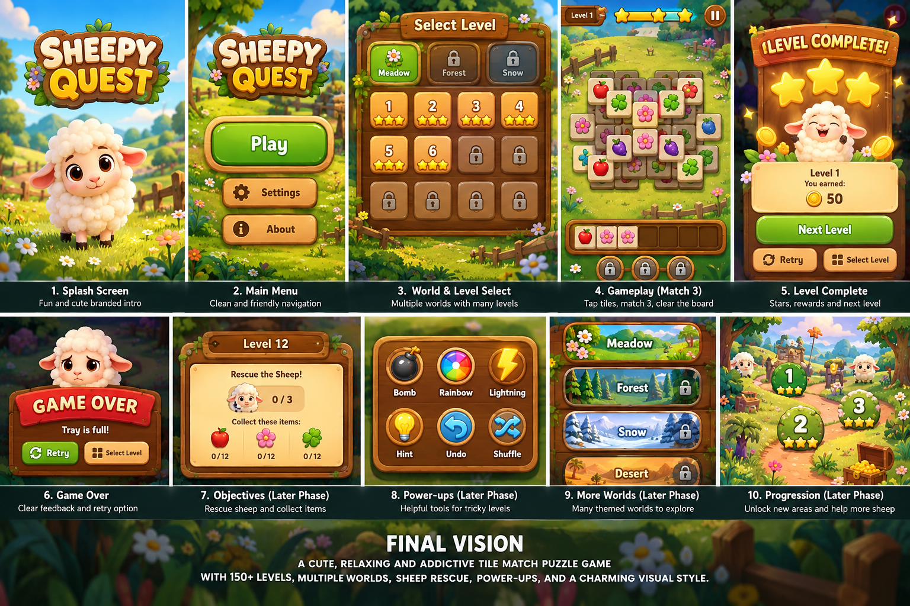
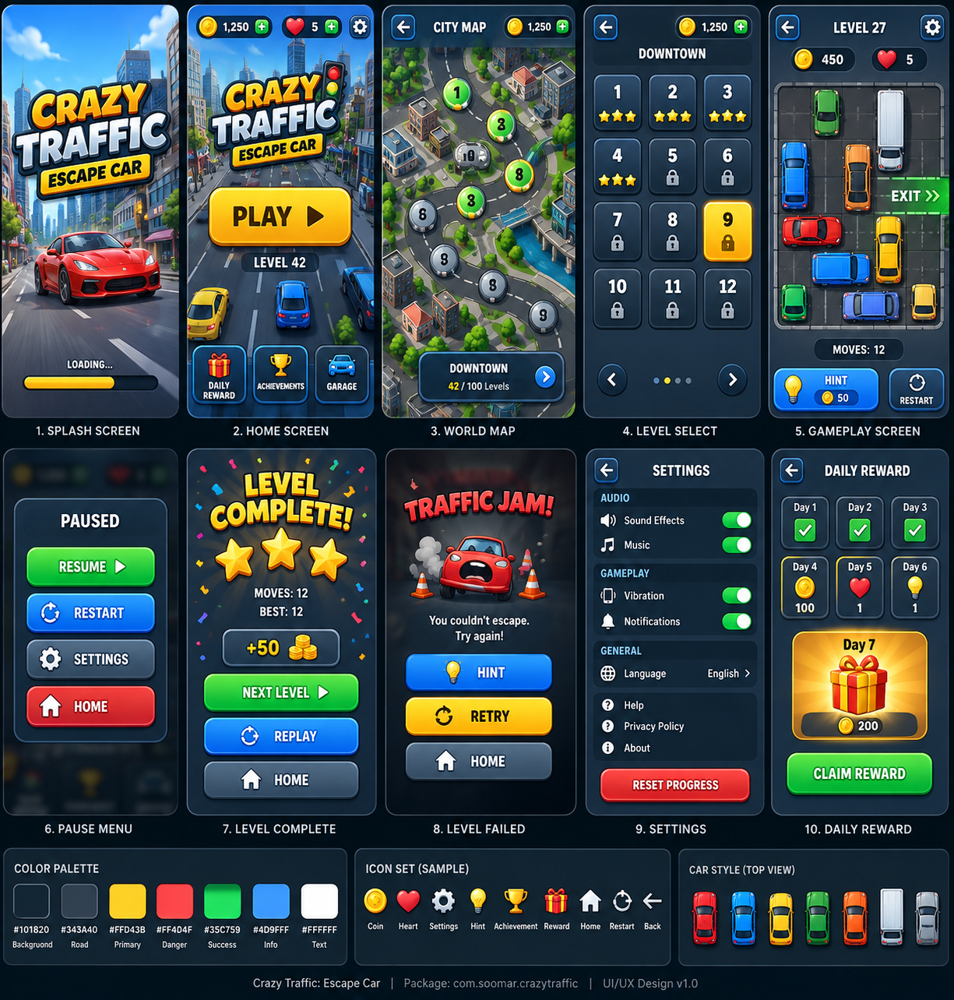
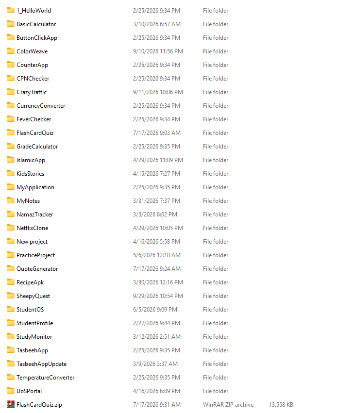

Programming
Java · C++ · Python
Programming fundamentals, logic building, problem solvingHello, I'm
I enjoy turning ideas into useful digital experiences — from Android applications and databases to web technologies, data science, and 2D games.
01 / A LITTLE ABOUT ME
I'm a Bachelor of Science in Information Technology student at the University of Sindh, Jamshoro.
My interests sit at the intersection of software development and practical problem-solving. I have independently built Android applications and explored databases, web development, networking, cybersecurity, Python, data science, and game development through coursework and personal projects.
I like understanding how things work, experimenting with tools, and gradually turning what I learn into something people can use.
Explore my learning journey ↗02 / TECHNICAL TOOLKIT
A snapshot of technologies explored through personal development, coursework, labs, and guided learning.
Java · C++ · Python
Programming fundamentals, logic building, problem solvingJava · Android Studio · SQLite
App screens, activities, UI components, local dataHTML · CSS · JavaScript · PHP
Web fundamentals, page structure, styling and interactionSQL · MySQL · Oracle · SQLite
Queries, relational data and database managementPython · Data Analysis
Data handling, visualization and introductory ML conceptsNetworking · Cybersecurity
Network fundamentals, protocols and security awarenessCloud Computing · Virtualization
Cloud labs, virtual machines and infrastructure concepts2D Games · Game UI
Gameplay systems, level-based design and iterationGitHub · VS Code · Oracle APEX · Packet Tracer
Development, database and networking toolsSkills represent areas of study and hands-on exposure; proficiency varies by technology.
03 / SELECTED BUILDS
A selection of personal and academic development work. More experiments and smaller applications are part of my ongoing learning.

A level-based 2D puzzle game concept with sheep rescue mechanics, progression, rewards, shop elements, and game feedback systems.

A traffic puzzle game focused on vehicle movement, level progression, visual feedback, and an evolving gameplay experience.
A student utility application concept bringing together task management, attendance tracking, GPA calculation, timetable, notes, and reminders.
My app development folder also includes experiments such as calculators, converters, quiz apps, notes, trackers, and other Android utilities.
04 / LEARNING IN PRACTICE
University labs and practical exercises have helped me explore different parts of IT. Selected evidence is available below.
Worked through C++ programming fundamentals including variables, operators, conditionals, loops, functions, arrays, strings, and basic problem-solving exercises. Also explored Java through Android development.
Completed university lab tasks involving Python-based data science learning, alongside a Microsoft-authorized Python Programming Fundamentals course delivered through Coursera.
Practiced database concepts and SQL through coursework and independent online learning, including a dedicated SQL bootcamp.
Explored the foundations of web pages and interactive interfaces through university Web Technologies tasks and practice with HTML, CSS, JavaScript, and PHP.
Worked with networking lab exercises and concepts related to network communication, protocols, addressing, configuration, and troubleshooting.
Explored cloud and infrastructure concepts through university practical work, including creating and connecting to a virtual machine using the Azure portal.
Completed a six-week virtual cybersecurity internship and beginner-level web hacking learning. Topics include security awareness, threats, vulnerabilities, and basic analysis.
Completed practical Android lab work covering Java in Android, UI components, multiple activities, fragments, and WebView-related exercises.

Android app experiments and projects including StudentOS, Sheepy Quest, Crazy Traffic, MyNotes, FlashCard Quiz, Currency Converter, Namaz Tracker, StudyMonitor and other utility apps.
View Week 1–6 lab work ↗05 / EDUCATION
University of Sindh · Jamshoro, Pakistan
Field of study: Information and Communication Technologies, software and applications development, database and network design and administration.06 / CONTINUOUS LEARNING
Verified course and internship documents provided for this portfolio. Select any card to open its certificate.
Online course · Jul 15, 2026
Open certificate ↗ CISCO NETWORKING ACADEMYNetworking foundations · Mar 08, 2026
Open certificate ↗ DEVELOPERSHUB CORPORATIONSix-week virtual internship · Dec 20, 2025
Open certificate ↗ UDEMY · CRUNCH CODING INSTITUTECourse completion · Aug 25, 2025
Open certificate ↗ UDEMY · SARA ACADEMYCourse completion · Aug 25, 2025
Open certificate ↗ UDEMY · CYBER TWINKLECourse completion · Aug 25, 2025
Open certificate ↗07 / LET'S CONNECT
I'm open to connecting about university collaborations, learning opportunities, software projects, and meaningful conversations around technology.